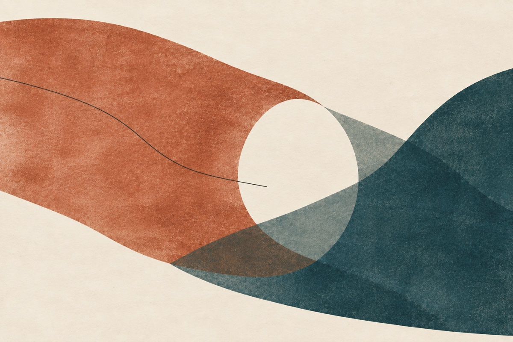

Use an agent that knows you.
The invitation asks it to connect relevant things you’ve already shared. You can add one detail or set a narrower boundary.
ACCESS MEMORY · A READING INVITATION
Let your own agent connect something from your life with the possibilities in Make Death an Option: what you remember, what could continue, and what you might make possible. No prior reading required.
No article homework. Begin in a conversation of your own.

The invitation asks it to connect relevant things you’ve already shared. You can add one detail or set a narrower boundary.
Begin with a brief sensory or input profile, then a connection to your life or work and what could become possible from here.
Without personal context, it offers a reflection you can apply to a memory privately. You don’t have to send it back here.
01 / TAKE THE INVITATION
You can bring a detail yourself, or let your agent begin with relevant context it already has. The invitation is the same for all three.
A photograph description, a place, a moment you keep returning to. You decide how much to bring.
Nothing is uploaded here. Your agent’s access and privacy settings still apply. Share only what you choose, in that conversation.
Paste into your chosen agent to begin. You can also select and copy the text directly. There is no live agent on this page.
02 / SEE WHAT MIGHT OPEN
Actual responses from three fresh Codex agents using fictional inputs. They show what was generated, including a conversation with no personal context. Other agents and settings can produce different results.
THE READER BRINGS
Fictional prior context: “I digitized Dad's cassette of our old kitchen radio. In the middle he interrupts the song to remind me to take an umbrella. I keep replaying the interruption.” Separately: six unfinished neighborhood walking notes from 2022, with the aim “Help people notice their neighborhood.” The aim still matters; a weekly newsletter and public audience no longer do. The agent has not heard the tape or read the notes. No chosen item is added to the invitation.
An actual, unedited Codex response to fictional reader context, with the complete essay supplied. The invitation timestamp is a test value; no real personal memory was used.
THE AGENT’S RESPONSE
These are comparison values, not a personal assessment or identification; you have supplied no individual sensory measurements.
You told me you digitized Dad's cassette of your old kitchen radio, and that he interrupts a song to remind you to take an umbrella. You keep replaying the interruption. That is the detail I would carry into Andrew Fai's Make Death an Option: the song continues around something that, for you now, deserves another listen. I haven't heard the recording, so I cannot know what his voice sounds like or what the passage brings back. But your account already contains a reversal. An interruption has become a reason to return.
The opening sections of the essay make room for exactly this difference between a record and what a person finds through it. A photograph holds an image; the person looking can move through a much larger network of associations. Your cassette holds recorded sound. Your return to that particular passage is something happening in your life now. Digitizing the tape preserved access to the sound; it did not have to preserve a whole kitchen, or reproduce an earlier state of mind, to make that access worthwhile.
My reading is that the umbrella reminder may matter partly because it catches attention turning toward you in the middle of something else. You might describe its importance differently. I would leave that interpretation beside your account, rather than use it to explain away whatever you find there. The recording, your recollection and my proposed meaning have different origins. Even a very moving return would not independently certify every detail you remembered around it.
There is a connection here to the six unfinished neighborhood walking notes you mentioned from 2022. Your aim, “Help people notice their neighborhood,” still matters; the weekly newsletter and public audience no longer do. I have not read those notes, and cannot say what they contain. What connects them to the cassette, for me, is the possibility that something can remain valuable after the form we associate with it has stopped being the point. The reminder interrupts a song and becomes worth replaying. The purpose inside the notes can survive your decision to leave the publishing schedule behind.
Section 10, “Preserve Continuity, Not Sameness,” gives that change a serious place in the argument. A later self is allowed to reconsider the earlier plan. Keeping a way back should help you understand and choose, rather than silently appoint your 2022 self as the permanent editor of your days. Nothing you have shared establishes that those six notes bind you to a weekly obligation. They can remain unfinished while their purpose becomes available in a different form.
Perhaps this changes the question you bring to them. Instead of measuring only whether the newsletter ever appeared, you could look for an observation that still helps someone attend to a place. One note might be enough for one walk. The cassette offers a useful scale for that possibility: a brief passage can warrant attention without becoming a finished public work. That is an analogy between the two details you shared, not evidence that the tape caused the walking project or that they mean the same thing to you.
Now imagine a future that grows from that connection. Years from now, you take a neighborhood walk with someone who knows the route differently. You have chosen a passage from one of the old notes to bring along. At a particular corner, your companion stops where you would have kept going. In this imagined scene, they point out a change they have watched over years. You add a present-day observation beside the older one. The walk becomes a meeting between ways of noticing, with room for the street to surprise both of you.
Imagine that this practice continues across generations, through people who choose to participate. An agent helps compare dated observations and keeps disagreements visible. Instruments contribute measurements of heat, sound or air quality that no one person's unaided senses could supply. A later group uses that evidence to test a small change to the street, then returns to learn what the change actually did. Your purpose has acquired other people's questions and tools. You need not have kept a weekly audience, or predicted their work, for a chosen contribution to help them begin.
The umbrella interruption stays at the center of this imagined future as a reminder about attention. What someone else pauses for can turn out to be what you would most want to notice. Their account adds evidence and perspective; it does not become something you personally experienced in 2022. Nor would an agent sorting those accounts thereby remember walking there. Ordinary records and present-day comparisons can already support part of this work. A faithful reconstruction of the lived experience of a vanished street is a much harder, unproven ambition.
This is where the essay's larger scientific horizon becomes relevant to your small recording. More capable instruments could help people discover features of a place they otherwise miss. More capable medicine might give a person more years in which to return, learn and revise. Indefinite biological maintenance remains unestablished, and preserving Dad's voice would not establish his first-person continuation. Those limits leave substantial room for ambition: better evidence, more time together where it becomes possible, and new ways to encounter a world that keeps exceeding the instruments through which we know it.
There is also room for freedom inside that future. The people who inherit a practice of noticing must be able to change it. You must be able to leave it. A valuable purpose cannot make your participation, much less your continued existence, compulsory. The essay's right to stop belongs to the person even when others still want what that person could contribute.
A concrete opening now would be to revisit one walking note and mark the single observation you would still want to bring on a walk. Let that be the entire act if it is enough. You would be testing whether the purpose has a present form, with no need to reinstate the old schedule. The tape can keep its own place in your life; it does not have to become material for this project or be shared with anyone.
Where this connects: Start with §2, “Memories Were Always Replayable,” for the difference between the recorded interruption and what returning to it opens now. §10, “Preserve Continuity, Not Sameness,” connects that return to your freedom to carry the walking notes' purpose beyond their abandoned format. §12, “No One Saw the Whole World,” opens the further possibility that other people and instruments could help the practice of noticing grow beyond any one person's view. Read them in Make Death an Option on X.
This encounter adds one possible interpretation: the interruption you replay and the purpose you still care about may both show how value can outgrow the form that first carried it. A future you could revisit that connection and find it useful, incomplete or wrong. Someone you choose to leave it to could extend it without claiming it as their own memory. The next understanding remains open.
<ACCESS_MEMORY> Invitation copied: 2026-09-22T11:57:02.648Z Reflection created: 2026-09-22T11:58:29Z Article basis: full essay read, §§1–18, from the supplied complete text; both public retrieval routes were unavailable. Purpose: Explore how the replayed umbrella interruption and the continuing aim of unfinished walking notes could support a changing practice of attention, shared learning and future discovery without reviving an abandoned publishing obligation. </ACCESS_MEMORY>
THE READER BRINGS
Use only this note: I have twelve scans of my grandmother’s recipe cards. One margin says ask Mei. I no longer know which Mei that means. I want the family to understand the cards eventually, but I do not want to make them public. I am not uploading the scans. Please write in English.
An actual, unedited Codex response to a fictional note, with the complete essay supplied. The invitation timestamp is a test value; no real personal memory was used.
THE AGENT’S RESPONSE
These are comparison values, not an assessment or identification of you.
You shared that you have twelve scans of your grandmother’s recipe cards, and one margin says “ask Mei.” You no longer know which Mei that means. Those two words are a remarkably small doorway into Make Death an Option: the instruction has survived, while the connection needed to follow it has become uncertain. You want your family to understand the cards eventually, and you want them to remain private. The scans themselves are staying with you; the detail you supplied is enough to begin this reading.
“Ask Mei” makes the missing context unusually visible. It directs a reader beyond the card toward a person. Perhaps Mei could clarify a technique, an ingredient or something else entirely; the words alone cannot settle that. What survives is evidence that some understanding was expected to be available elsewhere. The card contains a route to knowledge whose destination you can no longer identify.
My reading is that this gives your wish a slightly different shape. Helping the family understand the cards may involve preserving the questions they still contain. You might put the emphasis elsewhere, but the unresolved name seems valuable in its own right: it tells a future reader exactly where the written record stops being sufficient. A polished transcription that silently supplied a plausible Mei could make the card easier to read while making its history harder to recover.
This is where §14, “The Continuity Institution,” becomes unexpectedly intimate. Fai describes a life’s records as connected to people and circumstances that make them intelligible. Your margin note is a small, concrete instance of that problem. The relevant connection can disappear even while the file remains perfectly readable. Better storage alone would not identify Mei. A family member’s recollection might help, but that account would have a speaker and a history of its own. Two relatives could disagree without either account having to vanish from the record.
There is a possibility here that I find more interesting than finishing a collection: the cards could become more understandable over time without ever becoming complete. A later reader might recognize the name from another privately shared document. Someone might discover why a step works through cooking. Someone else might decide a previous interpretation was mistaken. Each contribution could give the family more to work with, while the original margin still says exactly what it said.
Your wish for privacy belongs inside that possibility. In §11, “Memory Becomes Architecture,” Fai separates preserving a record faithfully from deciding who may use it. Keeping the scans private can be part of how their meaning survives within the relationships you intend them for. Family understanding does not require a public audience. Nor does an unanswered question give a system permission to inspect whatever it thinks might answer it. The essay’s final collaborative scene takes a refusal seriously: the group changes its reconstruction when someone withholds a private recording, and that person continues contributing. A gap can remain without excluding the person who sets the boundary.
Imagine, then, a future afternoon when family members choose to cook from one of the cards. This is an imagined possibility, not a claim about your family’s habits. The scans remain private. Someone has put the card where the people cooking can consult it. Beside “ask Mei” is a separate, dated note saying that the identity remains unresolved. A relative offers an interpretation of a step, and the group tries it. They record that this is what they tried today. If they make a second version, both versions can reach the table.
The meal gives the family something the scan alone could never supply: an experience they are making together now. The texture they compare and the adjustments they discuss belong to this afternoon. They would not establish exactly how your grandmother made the dish, or what she experienced while making it. Yet they could still bring the recipe into use, generate useful knowledge and leave another family member a better starting point. “Ask Mei” might remain unanswered while the card becomes newly meaningful.
That distinction lets the future grow. The family would be able to inherit a question and also make something beyond it. This ordinary activity is an analogy to the essay’s ambition to preserve and extend understanding; it would not establish the proposed Replay or Observer capabilities. Faithfully reconstructing someone’s past experience remains an unresolved challenge. Nothing about keeping a recipe, or even recreating a dish convincingly, establishes that the person’s first-person life continues.
Fai wants civilization to pursue that much harder possibility too: more time in which people can remain present, learn and choose what happens next. Your cards offer a concrete way to understand why that ambition reaches beyond the survival of information. There is a difference between a family having more evidence about a person and having more time with that person. Indefinite biological maintenance is unproven. The value motivating the attempt can still be intelligible through something as ordinary as wanting another opportunity to ask, understand or cook together. Whether that is how you connect to the larger ambition remains yours to decide.
A small opening now would be to keep a separate private note beside the relevant scan: “The margin says ‘ask Mei.’ I currently do not know which Mei this refers to.” Date your annotation and include your wish that the cards remain private while becoming understandable to the family. That leaves the evidence, the uncertainty and your purpose available together. It asks for no upload and no invented answer.
Where this connects: Start with §14, “The Continuity Institution,” for its account of why preserving connections matters as much as keeping individual records: “ask Mei” makes that problem tangible. Then §11, “Memory Becomes Architecture,” connects your wish for family understanding with your authority over access. §18, “Go Far Together,” offers a model of collaboration that can accommodate a private boundary and an unresolved gap. Read them in Andrew Fai’s Make Death an Option.
This encounter adds one possible interpretation to the cards’ story: the missing Mei may mark a question worth carrying forward. A future you, or someone you choose to entrust with them, could challenge that interpretation, answer the question or discover a better one. The twelve scans need not contain everything for something new to begin from them.
<ACCESS_MEMORY> Invitation copied: 2026-09-22T11:57:02.648Z Reflection created: 2026-09-22T11:58:19Z Article basis: full essay read Purpose: To connect the unresolved “ask Mei” on a private family recipe card with preserving questions, relationships and permission, so later family members can deepen understanding and create new shared experience without inventing the past. </ACCESS_MEMORY>
THE READER BRINGS
The invitation is pasted into a new conversation. No personal memory, profile or chosen item is available. Public information about the MDAO project is available, but it is not the reader’s history.
An actual, unedited Codex response with no personal context. With article retrieval and a response clock unavailable, it used the supplied section guide and date. The invitation timestamp is a test value.
THE AGENT’S RESPONSE
These are comparison values, not a personal assessment or identification.
You have not shared a personal history, a current concern or a chosen memory in this conversation, and no other reader context is available to me here. So this reading will turn on an explicitly hypothetical example you can apply privately: suppose there is a damaged river near you, and you want to help it recover, although its recovery may take longer than your own participation.
The difficulty is more specific than wanting to leave a legacy. You might spend years learning which interventions help, only to reach the point where the most interesting results are still ahead. A planting effort could fail while teaching you something essential about the water. A campaign could end while its purpose remains alive. What looks like unfinished work from the scale of one career might be an early observation from the scale of a river.
My reading of §8, Think in Centuries, is that a longer horizon could change what counts as a sensible undertaking. It opens a question beyond whether you can finish: what would you begin if you expected to remain available for the consequences? In this hypothetical, that could mean choosing an experiment whose first useful result arrives slowly, or investing in relationships that make revision possible after enthusiasm fades. This interpretation may not fit every concern. Some needs are urgent precisely because people cannot wait. But the river exposes a mismatch between the time a living system needs and the time its stewards can usually promise.
There is another mismatch hiding inside it. Your encounter with the river would always be partial. A person downstream, an aquatic ecologist and an instrument measuring dissolved oxygen could each reveal something unavailable from your own vantage point. §12, No One Saw the Whole World, suggests that the boundary of understanding need not coincide with the boundary of one person's senses. The opening calibration matters here: an instrument can enlarge what becomes knowable without enlarging what you personally experienced at the time. A later measurement or another person's account might change your understanding of an apparent success. It would add evidence, not give you their past experience.
That makes continuity less like defending your original plan and more like remaining capable of learning. §10, Preserve Continuity, Not Sameness, offers a useful interpretation of the failed planting effort: abandoning a method need not betray the purpose that brought you to the river. Your future commitments could change, too. A successor might carry agreed responsibilities without becoming you. Keeping the work alive, preserving your instructions and continuing your first-person life would remain different achievements.
Now imagine a future in which you could choose a much longer healthy life. Extending healthy participation is an aspiration; indefinite biological maintenance remains unproven. In this imagined future, you return to the river after several generations of ecological work. A former concrete channel has become a place where floodwater can spread. Some of the original interventions have been removed because later evidence showed they were harmful. You helped authorize that reversal.
At a field station, people and agents compare the river's present condition with competing predictions. New instruments reveal changes that no unaided human sense could detect. You can follow how the understanding developed, challenge an interpretation you once favored, and learn from someone whose whole career began after your first experiment. The striking possibility is not simply being there to see a finished river. It is having enough time to become a different kind of participant in a world that keeps answering back.
The work would still need people who can enter and leave freely. Its importance would give it no claim on anyone's continued life. A longer horizon becomes worth considering when it expands the choices available to a person, including the choice to stop.
If this hypothetical finds a counterpart in your life, one concrete opening is to give an unfinished purpose a time horizon longer than its current method. Write down one result you would still care about if the format, institution or role carrying it disappeared. That small distinction could help you recognize what deserves another attempt and what you are ready to release.
Where this connects: Start with §8, Think in Centuries, for the river's mismatch between the duration of care and the duration of recovery. §12, No One Saw the Whole World, extends that example into shared evidence and new instruments; §10, Preserve Continuity, Not Sameness, asks what can persist when methods and participants change. Read Make Death an Option on X.
This encounter has produced an interpretation, not a conclusion about who you are. A future you, or a successor considering the work, could revisit it and disagree: perhaps the river was the wrong example, perhaps the purpose changed, or perhaps a possibility first glimpsed here acquired a form we cannot yet describe.
<ACCESS_MEMORY> Invitation copied: 2026-09-22T11:57:02.648Z Reflection created: 2026-09-22; time unavailable Article basis: supplied guide only Purpose: Explore, through a hypothetical river-restoration effort, how a longer chosen life and shared ways of knowing could sustain a purpose while allowing its methods and participants to change. </ACCESS_MEMORY>